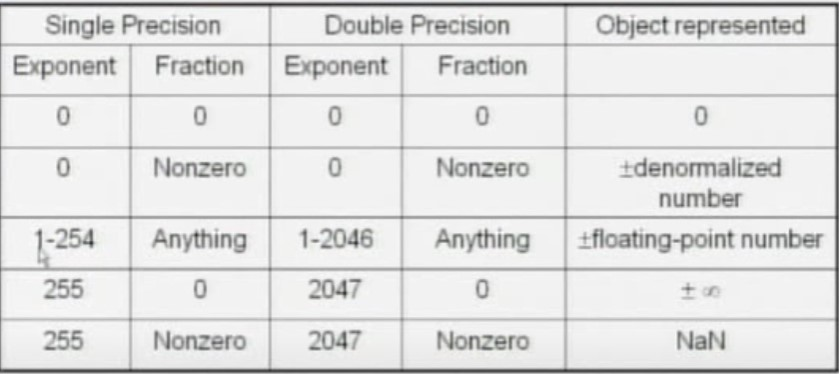
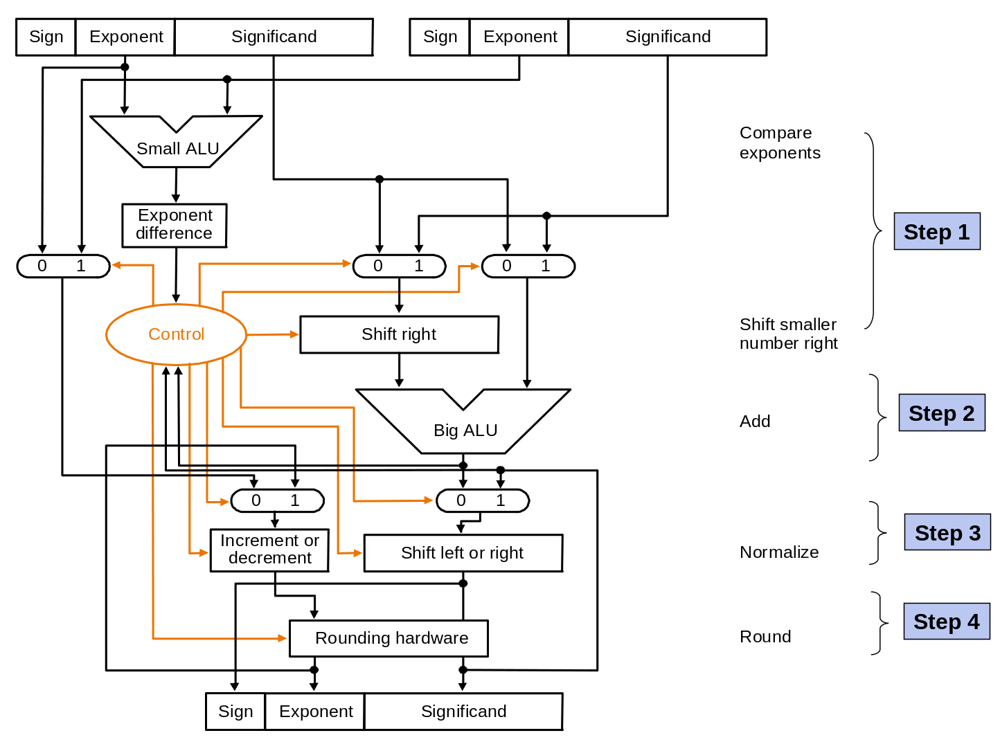

# 浮點數
normalizerd: 整數只有一位，而且是非零
=>normalizerd
=>not normalizerd
=> not normalizerd
IEEE-754 儲存的浮點數要是 normalizerd, 1.0 <= |significand| < 2.0
| S | Exp | Fract |
|---|---|---|
| 1 bit | 8 bit | 23 bit |
float.bias = 127, 因為指數的部分可能不一樣，有可能是正數也有可能是負數。但是 00000000 和 11111111 都不能用，這些要用在特別的地方。
# 例子
-0.75
, 但因為要做 normalizerd 所以變成：。exp = 127 + (-1) = 126
| S | Exp | Fract |
|---|---|---|
| 1 | 126 | 11000~ |

# 加法
的步驟
- Align
- Add
- normalize
- Round (要看小數的精確度)
# 電路圖

# 控制精確度 - Guard bit, round bit, stick bit
如果精確度只有兩位的話，在下一位稱為 guard bit, 在下一位稱為 round bit, 最後面幾位稱為 stick bit。